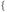
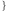
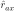
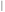
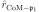
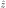
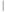

Next: Rotor equations Up: Rotor frame order model Previous: Rotor frame order model Contents Index
The natural way to parameterise the rotation axis of rotor frame order model is to use a 3D point, the pivot point, and a unit vector using the spherical angle basis set. This would result in the parameter set
 |
However this is an overparameterisation as the point px, py, pz can lie anywhere on the line defined by itself and the unit vector. Due to computational truncation artifacts, this results in the pivot point shooting out to infinity along the line during optimisation.
The minimal set of independent parameters for the rotor model is four. There are many parameterisation of lines in 3D using this minimal set of four parameters, however many of these suffer from singularity problems which can be fatal for optimisation. By using geometry of the model together with information about the molecular system, a parameterisation can be constructed which avoid singularities:
The full parameter set for the rotor model implementation is therefore
 |
where Pi are the average domain position translations and rotations, Eαax is the single angle defining the rotation axis, pi are the coordinates of the pivot point, and σmax is the torsion half-angle of the rotor motion.
The rotation axis vector in the system is calculated as
|  = Rα⋅(×). | (16.8) |
The angle Eαax is obtained from as
 |
The relax user manual (PDF), created 2020-08-26.